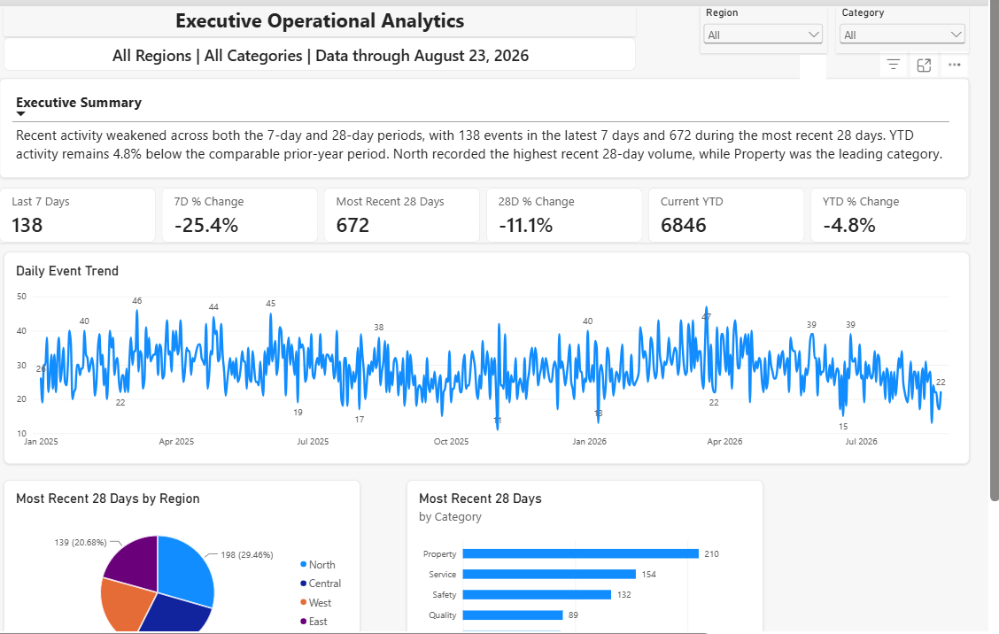
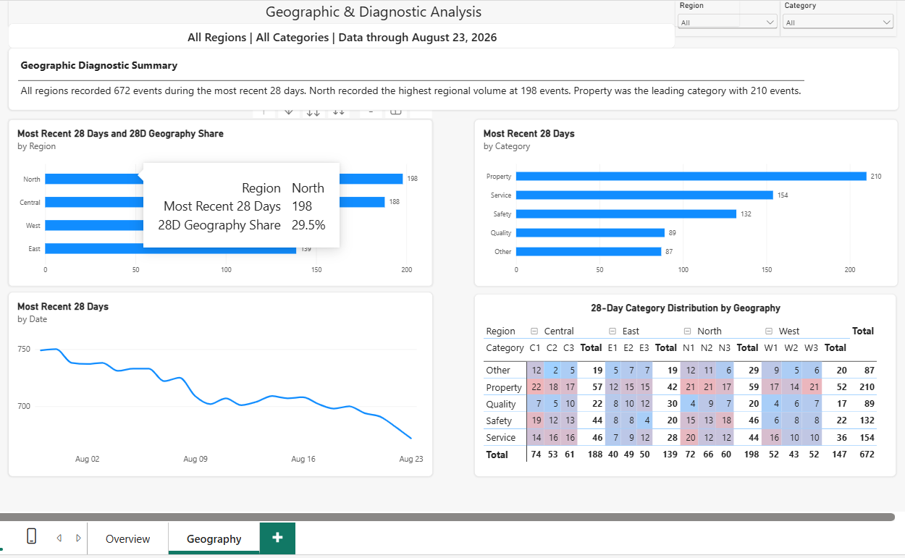

Executive monitoring
Six headline measures summarize the latest 7 days, recent 28 days, and YTD performance with period-over-period context.
FLAGSHIP CASE STUDY
A portfolio-safe Power BI case study that turns recurring operational questions into trusted KPIs, dynamic executive narratives, and geographic diagnostic analysis.
THE BUSINESS PROBLEM
Recurring reporting can show what happened while still leaving decision makers to determine whether a change is unusual, where it is concentrated, and what is driving it. The project was designed to reduce that analytical friction.
THE SOLUTION
The report moves from executive monitoring to geographic diagnosis while reusing the same governed measure layer and filter context.

Six headline measures summarize the latest 7 days, recent 28 days, and YTD performance with period-over-period context.
The Executive Summary synthesizes KPI direction and current Region/Category selections instead of simply repeating card values.
GEOGRAPHIC & DIAGNOSTIC ANALYSIS
The second page adds hierarchy-aware geography measures, category ranking, a rolling 28-day view, and a diagnostic matrix that exposes the composition beneath regional totals.

Region and Subregion comparisons identify geographic concentration.
Category rankings show the dominant activity in the current context.
The matrix reveals which categories and subregions are contributing to the pattern.
CONTEXT-AWARE ANALYTICS
The narrative logic was validated across four principal states: All Regions / All Categories, selected Region / All Categories, All Regions / selected Category, and selected Region / selected Category.
Identify the leading Region and leading Category.
Describe the selected Region and its leading Category.
Identify the Region with the highest volume for that Category.
Describe the selected combination directly without mislabeling a filtered value as an unrestricted leader.
“West recorded 52 events during the most recent 28 days, representing 24.8% of all Property events across regions. W3 recorded the highest subregional volume at 21 events. The analysis is filtered to Property.”
ANALYTICAL MODEL
A dedicated Measures table centralizes KPI logic so the same definitions drive cards, charts, matrices, percentages, and dynamic narratives.
TECHNICAL HIGHLIGHTS
Detect current Region and Category selections so narrative text can change appropriately.
Changes geography-share logic between Region and Subregion levels.
Removes only the dimensions needed for comparison while preserving the rest of the analytical context.
Builds ranking tables, identifies maximum values, and preserves ties.
Constructs context-aware narratives and handles multiple analytical states.
Applies heat formatting only to Category × Subregion detail cells while keeping totals neutral.
TIE-AWARE RANKING
Rather than allowing a single-row ranking function to hide ties, virtual tables retain every geography or category matching the maximum value. The names are then combined dynamically.
DESIGN APPROACH
Both pages place the current analytical context and dynamic narrative before supporting visuals.
KPIs show performance, trends show time, rankings show concentration, and the matrix exposes composition. Additional visuals were avoided when they did not answer a new question.
The same core measures are reused across visuals and narratives to reduce the risk of conflicting definitions.
OUTCOME
The completed solution provides an executive view of recent performance and a diagnostic path into geography and category drivers. The project demonstrates Power BI development, dimensional modeling, DAX filter-context management, interaction design, analytical storytelling, and the translation of operational data into decision-oriented information.
PUBLIC DEMONSTRATION
The screenshots above were built from the synthetic public dataset and demonstrate the completed Power BI design.
NEXT